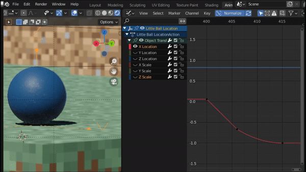

Project 1
Tutorial Animation
Tutorial Modification
Changed background
Tilted rotation axis of planets (Uranus is almost on its side)
Textured planets, moons, and sun
Arnold Render
Animated Camera
Mutliple cuts
Earth and mars have oceans, clouds, and atmosphere
Project 3
Bouncing Ball Animation
Principles of Animation:
- Squash and Stretch - the ball stretches during strong movements and squashes to absorb impacts
- Anticipation - both the ball and the cow squash before an important movement is performed,
for example the cow getting startled and the camera shaking before the big ball is on screen
- Staging - no two characters move on screen at the same time. There is at least a 1 frame gap between actions.
All object of interests lie on the thirds of the camera
- Slow-In and Slow-Out - Ease in and ease out are used for most movements. Cud has more frames on the
downswingthan the upswing, indicating slower and faster movement
- Follow-Through and Overlapping Action - the cow's head leads the body, giving the feeling of
a main and a proceding action. The cow overshoots the turn around for a frame and snaps back to its intended pose.
The ball follows through its jump by rolling a short distance afterwards
- Arc - the ball moves in a parabolic tragectory. The cow's startle and ball's startle is on the same arc
Beyond the 12:
- Gravity and friction have quadratic curves, character "muscle" movement has cubic curves
- Follow through must conserve energy
- Small characters move faster than larger ones
- Squash and stretch strength conveys material
- Unless heavy, smaller objects have less traction than larger ones. Balance with inertia
- Prioritize staging on screen than real location. Use forced perspective or different focal lengths if necessary

